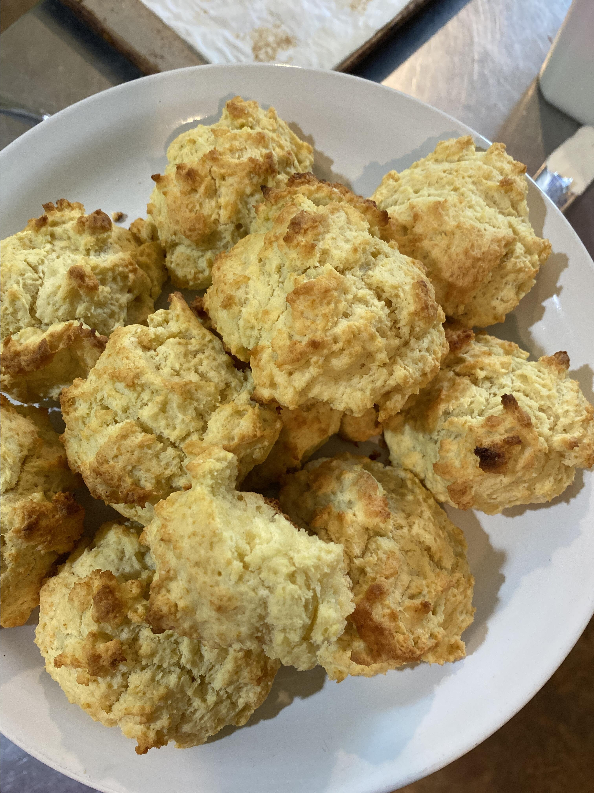

Grandma's Baking Powder Biscuits

This is my grandmother's biscuit recipe. It is my all-time favorite and has a really good flavor to it. Be sure not to roll out too thin, you want high biscuits! I usually just pat out the dough to the desired thickness, usually 1/2 inch.
These warm and fluffy biscuits will dissolve right in your mouth.
Ingredients
- 2 cups all-purpose flour
- 2 tablespoons white sugar
- 4 teaspoons baking powder
- ½ teaspoon cream of tartar
- ½ teaspoon salt
- ½ cup vegetable shortening
- 1 egg
- ⅔ cup milk
Steps
- Preheat an oven to 450 degrees F (230 degrees C).
- Sift flour, sugar, baking powder, cream of tartar, and salt into a bowl. Use a pastry cutter to chop vegetable shortening into the flour mixture until it resembles coarse crumbs. Whisk egg and milk together in a separate bowl and slowly add milk mixture to flour mixture, stirring as you pour, until dough is moistened and well-mixed. Drop dough by spoonfuls onto an ungreased baking sheet.
- Bake in the preheated oven until biscuits have risen and are golden brown, 10 to 12 minutes.